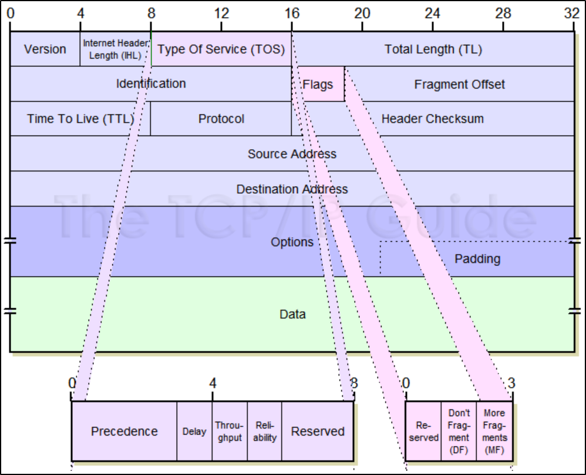

IP addresses are a 32 bit long numbers made up of four octets
IP addresses belong to the networks, not the devices attached to those networks.
when connecting a new device to a network, IP address will be assignd automaticaly thourgh DHCP (dynamic host configuration protocol)
when assigned with DHCP its known as dynamic IP ad
static IP must be configured on a node manually - they are reserved for servers and network devices (in most cases)
Packets under the IP protocol are refered to as IP datagram
IP datagram - a highly structured series of fields that are strictly defined
each line in the datagram is 4 bytes (32 bits), the last line is optional, which results in 20 bytes of mandatory header data (5 lines x 4 bytes)
the option field max size is 40 bytes (10 lines of 4 bytes max), giving a total header lenght between 20 to 60 bytes

VER - version - IPv4 or 6
IHL - 4 bits (0 - 15) to define the header lenght by number of lines:
if we got 0101 that is 5 in dec, meaning 5 lines of 4 bytes = 20 bytes - which is the minimum lenght of the header
since header lenght is counted by lines, it explains why there's padding to the option - in order to complete to a whole line and not lose data.
- its nesscecery since header lenght varies
TOS {
Precedence (priority - חשיבות) - if the router needs to discard some datagrams, the datagrams with lowest precedence will be discarted first
afterwards comes the service type itself

}
TL-

identification - 16 bit used to group msgs together, in case size is over the max size of 65535, the identification makes sure that the receiving end will know which packets come together
flags - indicates if datagram has been fragmented or allowed to be fragmented
framentation offset - which fragment is that? no 1, 2, 3 or 34?
TTL - time to live - 8 bits to hold a timestamp, decremented by each router, so packets wont travel indefinitly trying to get to nowhere
the datagram is discarted when TOL reaches 0
64, 128 and 255 are the most common TTL start values - when looking at the TTL of an arrived packet, number of hops can be calculated
Protocol - defines the higher level protocol that uses the services of the IP layer
Header checksum - checksums to see if packet arrived intact, changes due to total lenght and time to live
Option + padding - optional field, may contain options for - security, record route, timestamp and etc